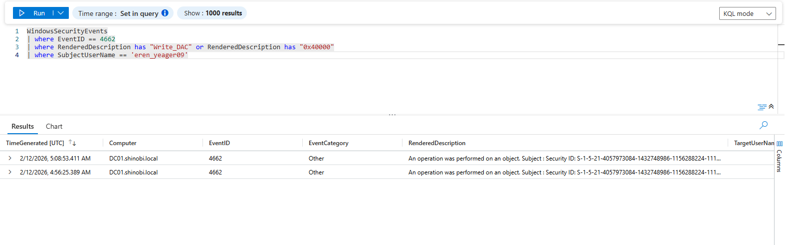
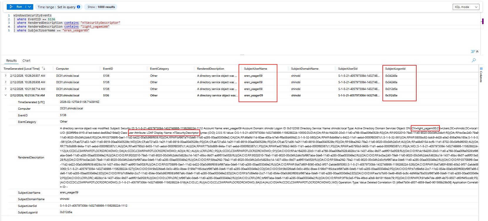
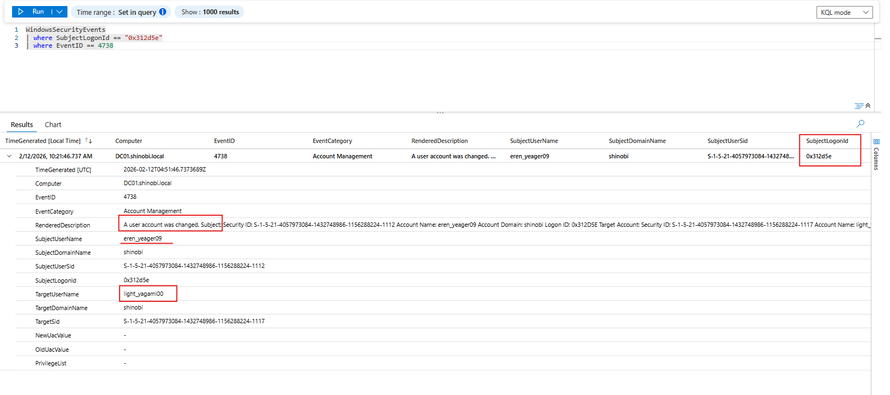
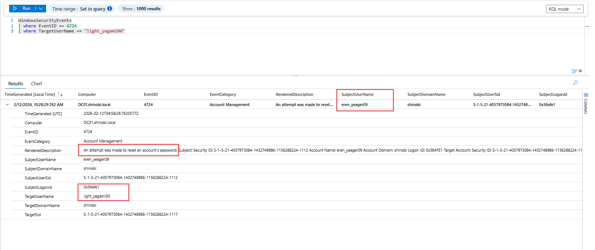

User Owns WriteOwner Permission On Another User
Detection & Telemetry (WriteOwner on User)
- 1.
1. Overview
Attack Vector: The attacker (eren_yeager09) abused the WriteOwner permission to seize ownership of the user light_yagami00. Once they became the owner, they granted themselves "Full Control" and forcibly reset the victim's password.
Key Log Sources:
- Event ID 5136: Directory Service Object Modified (Captures the modification of the Security Descriptor/Owner).
- Event ID 4738: A user account was changed.
- Event ID 4724: Password Reset (The Impact).
- Event ID 5145: Network Share Object Access (The Network Source).
- 2.
2. Scenario: Detecting the ACL Write (The Exploit)
Objective: Detect the specific moment eren_yeager09 granted themselves permissions.
Logic: While Event 5136 tells us an object changed, Event ID 4662 is often more specific about what right was exercised. We filter for the Access Mask 0x40000, which corresponds strictly to WRITE_DAC (the permission to modify the Access Control List).
KQL Query:
WindowsSecurityEvents
| where EventID == 4662
| where RenderedDescription has "Write_DAC" or RenderedDescription has "0x40000"
| where SubjectUserName == "eren_yeager09" // The Attacker
| project TimeGenerated, Computer, EventID, ObjectName, AccessMask, SubjectUserName
Analysis:
- Event:
4662(An operation was performed on an object).
- Access Mask:
0x40000(Write_DAC).
- Significance: This proves the user didn't just "touch" the object; they specifically rewrote its permissions. This is the smoking gun for the
dacledit.pyexecution.
{kind=link}

- .
. Scenario: Detecting Ownership/ACL Modification
Objective: Detect the exact moment eren_yeager09 modified the security settings of light_yagami00.
Logic: We search for Event ID 5136 where the AttributeLDAPDisplayName is nTSecurityDescriptor. This attribute stores the Discretionary Access Control List (DACL) and the Owner SID. A write to this attribute by a non-admin user is a high-fidelity Indicator of Compromise (IoC).
KQL Query:
WindowsSecurityEvents
| where EventID == 5136
| where RenderedDescription contains "nTSecurityDescriptor"
| where RenderedDescription contains "light_yagami00"
| where SubjectUserName == "eren_yeager09" // The Attacker
| project TimeGenerated, Computer, EventID, RenderedDescription, SubjectUserName, SubjectDomainName
Analysis:
- Timestamp:
10:21:56 AM
- Actor:
shinobi\eren_yeager09
- Action: Modified
nTSecurityDescriptoronlight_yagami00.
- Significance: This single log entry proves the exploitation of WriteOwner/WriteDACL. Normal users do not modify the security descriptors of other users.
{kind=link}

- .
. Scenario: Corroborating Account Changes (The "Action")
Objective: Confirm that the user object was indeed altered.
Logic: Event ID 4738 is generated when a user object is changed. While less granular than 5136, it provides an easier-to-read summary that an account modification occurred initiated by the attacker.
KQL Query:
WindowsSecurityEvents
| where EventID == 4738
| where SubjectUserName == "eren_yeager09"
| project TimeGenerated, EventID, RenderedDescription, SubjectUserName, TargetUserName
Analysis:
- Actor:
eren_yeager09
- Target:
light_yagami00
- Context: This event aligns perfectly with the timeline of the
nTSecurityDescriptorchange, reinforcing the narrative of unauthorized modification.
{kind=link}

- .
. Scenario: Detecting the Password Reset (The "Impact")
Objective: Detect the final stage of the attack—the account takeover.
Logic: We look for Event ID 4724 (Administrative Password Reset). The attacker, having granted themselves "Full Control" via the previous steps, now exercises that right to hijack the account.
KQL Query:
WindowsSecurityEvents
| where EventID == 4724
| where TargetUserName == "light_yagami00"
| project TimeGenerated, EventID, RenderedDescription, SubjectUserName, TargetUserName, SubjectLogonId
Analysis:
- Timestamp:
10:28:29 AM(Approximately 7 minutes after the initial ACL modification).
- Actor:
eren_yeager09
- Action: Reset password for
light_yagami00.
- Conclusion: The kill chain is complete. We have successfully traced the attack from Permission Change $\rightarrow$ Object Modification $\rightarrow$ Account Takeover.
{kind=link}

- .
. Scenario: Network Attribution (The "Source")
Objective: Identify the machine used to launch the attack.
Logic: Since the attack tools (impacket, net rpc) operate over the network via SAMR/RPC named pipes, we look for Event ID 5145 (Detailed File Share) targeting the IPC$ share.
KQL Query:
WindowsSecurityEvents
| where EventID == 5145
| where ShareName == @"\\*\IPC$"
| where SubjectUserName == "eren_yeager09"
| project TimeGenerated, EventID, ShareName, SubjectUserName, IpAddress, IpPort
Analysis:
- IpAddress:
192.168.56.50
- Attribution: This confirms the attack originated from the Kali Linux machine, providing network-level evidence to support the identity-level findings.